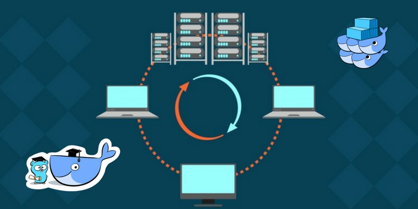
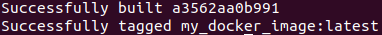
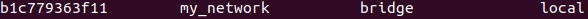
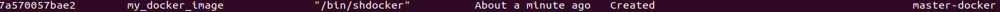
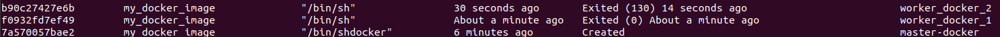

Boost up neural networks using docker containers and pyspark part : 1

src: https://images.app.goo.gl/itH6Cbq8LK7cNZxM8
Introduction:
In this blog we will learn how we can use spark to boost up the inference speed of the neural network model. The whole topic is too long to cover in a single blog so we will divide it in two parts
- Create spark cluster on which we will run multiple instances of the model
- Run the neural networks on the cluster
Lets begin,
For creating cluster we will use docker containers and create a common network where they can communicate with each other
Lets start with introduction of Docker:
Docker is a set of platform as a service products that use OS-level virtualization to deliver software in packages called containers. Containers are isolated from one another and bundle their own software, libraries and configuration files; they can communicate with each other through well-defined channels. [https://en.wikipedia.org/wiki/Docker(software)](https://en.wikipedia.org/wiki/Docker_(software))_
Thanks to docker containers we will be able to create several worker nodes on which we can run spark for distributed processing.
Docker Installation:
Docker installation is very easy just follow the steps in the following link
Get Docker Engine - Community for Ubuntu
Create Docker image :
To create a docker image we need to first create a Dockerfile which upon building will install all the libraries that we want.
Sample docker file:
1 |
|
Now build the docker image using the following command
1 | $ docker build -t "my_docker_image" . |
This will create a docker image with name my_docker_image

You can see the list of images by using the following command
1 | $ docker images |
You should see your newly created image.
Now we are ready to create containers using the above image.
Create docker network:
Docker network is essential when containers wants to communicate . The most common and default network is bridge.
Run the following command to create a network
1 | $ docker network create "my_network" |
Run the following command to list all existing networks
1 | $ docker network ls |
You should see your newly created networks

Now that we have created the network , we can now create containers and bind them with the network that we created.
Create docker container:
Let’s first create a master node of the cluster
Run the following command to create the master docker container
1 | $ docker run -it --name master-docker --network my_network my_image /bin/sh |
This command will create the container and attach a shell with the container
To check if the docker is running , run the following command to list down all running container
1 | $ docker ps -a |
You should see the container master-docker running

Now lets create 2 worker nodes
The following commands will create two worker nodes with names worker_docker_1 and worker_docker_2
1 | $ docker run -it --name worker_docker_1 --network my_network my_image /bin/sh |
1 | $ docker run -it --name worker_docker_2 --network my_network my_image /bin/sh |
Now again check the running container now you will be able to see one master node and 2 worker nodes.

That’s it for this part , tune in for part 2 of the blog where we will run spark over the cluster and run neural network over it